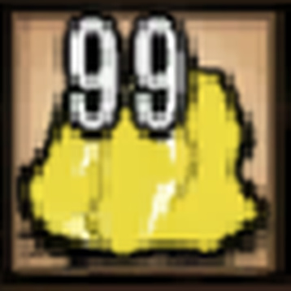
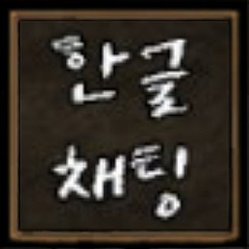
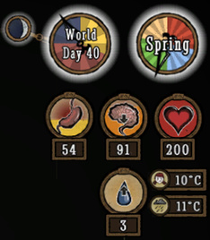

루피의 모자는 정신력을 올려줌
루피의 모자는 정신력을 올려줌
모든 고기를 먹을 수 있음
허기 수치 300
두배로 허기짐
번개에 먼역

 미니맵이 보이지 않음
미니맵이 보이지 않음
검으로 나무를 팰 수 있음
검으로 원거리 공격 가능
순간이동해 공격 가능
검의 내구도 무제한

 시야가 넓음
시야가 넓음
원거리 무기인 쿠로 카부토 소지
10t해머 소지
낮은 체력
낮은 공격력

 여자 옆에 있을때 정신력이 오름
여자 옆에 있을때 정신력이 오름
요리를 빠르게 할 수 있음
요리를 두배로 생산할 수 있음
담배를 피우면 정신력이 오름
30% 정신력이 빨리 소모됨

 추위에 먼역
추위에 먼역
동물들이 도망치지 않음
약을 제조 가능
불에 2배 데미지
낮은 공격력

 밤이 되도 불이 필요 없음
밤이 되도 불이 필요 없음
불에 먼역
추위에 먼역
원거리 공격 가능
낮은 정신력
* 가방과 장비를 같이 착용하게 해주는 모드

* 요리의 정보를 표시해주는 모드
* 아이템의 최대 저장량을 늘려주는 모드

* 한국어로 번역해주는 모드
* 채팅시에 한글로 나오게 해주는 모드

* 다른 플레이어들의 맵의 밝힌 영역 공유 및 위치를 표시해주는 모드

* 화면에 상시 미니맵을 표시해주는 모드
* 날짜,계절,정신,허기,체력,습도,온도의 상태를 표시해주는 모드

* 몬스터들의 체력을 표시해주는 모드

* 한번 들어간 웜홀의 색상별로 나타나게 해주는 모드